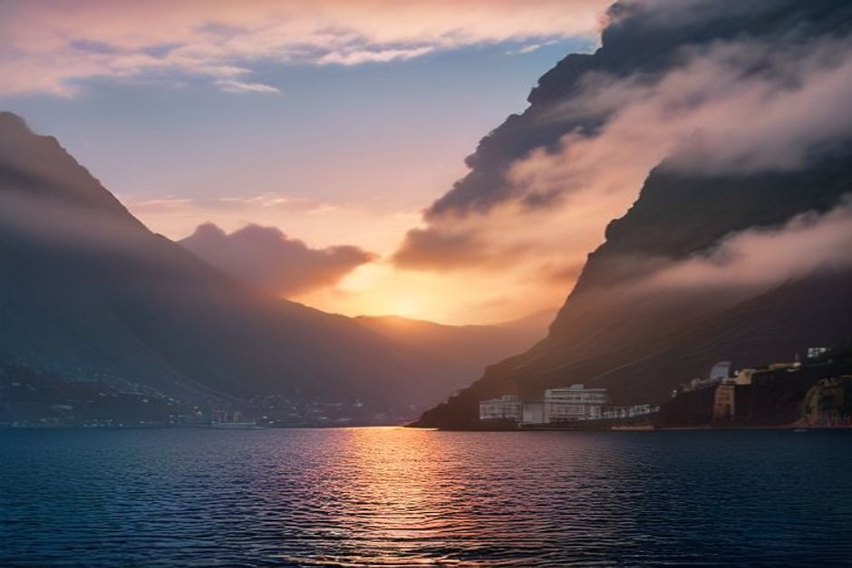

Al largo di Funchal, in realtà, hai solo tre fasce orarie tra cui scegliere, e ognuna ti regala una costa diversa. Ecco cosa cambia davvero tra mattina, pomeriggio e tramonto, così puoi prenotare quella che fa per te.
Qual è il momento migliore della giornata per un'escursione in barca a Madeira?
Dipende se per te conta di più il bagno o la luce. La fascia mattutina 10:00–13:00 ha l'acqua più calma della giornata e le foto più nitide della costa. La fascia pomeridiana 14:00–17:00 ha il mare più caldo per nuotare. E la partenza al tramonto dalle 18:00 rinuncia al bagno in cambio dei colori più belli della giornata sulle scogliere. Tutte e tre percorrono lo stesso tratto di costa — Câmara de Lobos, Cabo Girão e oltre — solo in orari diversi.

Il mare è più calmo al mattino o al pomeriggio?
Di solito al mattino. La costa sud di Madeira si comporta come la maggior parte delle isole atlantiche: quando la terra si scalda durante il giorno richiama la brezza marina, così il vento e il piccolo moto ondoso tendono ad aumentare a partire dal primo pomeriggio. Una partenza alle 10:00 trova in genere l'acqua più piatta della giornata, e questo conta più di quanto si pensi: acqua piatta significa nuotate più facili, riprese col drone più stabili e una navigazione più dolce davanti a Cabo Girão. Raramente il mare è abbastanza mosso da fare davvero differenza, ma se l'acqua calma è la tua priorità, prenota la mattina.
Com'è davvero la fascia mattutina (10:00–13:00)?
È lo stesso percorso del pomeriggio: Câmara de Lobos, poi Cabo Girão con un passaggio del drone, poi soste bagno a Fajã dos Padres e Ribeira Brava prima del rientro veloce a Funchal. Al mattino la visibilità in acqua è di solito la migliore e la luce più morbida per le foto, perché il sole non ha ancora raggiunto l'angolazione più dura di mezzogiorno. Cibo e bevande sono a bordo in entrambi i casi, quindi è davvero una questione di luce e acqua calma contro un mare leggermente più caldo.
Com'è davvero la fascia pomeridiana (14:00–17:00)?
Stessa costa, acqua più calda. A metà pomeriggio il mare intorno a Fajã dos Padres e Ribeira Brava ha ricevuto già diverse ore di sole in più, quindi è di solito il momento più comodo per tuffarsi se sei sensibile all'acqua fredda. Il compromesso è un po' più di vento e una luce di mezzogiorno leggermente più dura nella prima ora, che si ammorbidisce col passare del pomeriggio. Se prolunghi con l'opzione da 3 ore che arriva fino a Ponta do Sol con video filmato, questa è la fascia giusta: la luce torna morbida proprio verso la fine, mentre si girano le riprese.
Perché la Sunset Trip non include il bagno?
Perché a quell'ora l'acqua è davvero troppo fredda. La temperatura del mare resta abbastanza stabile durante il giorno, ma quella dell'aria scende in fretta quando il sole è basso, e uscire dall'acqua nell'aria della sera che si raffredda non è piacevole. La Sunset Trip parte alle 18:00 e copre la stessa costa — Câmara de Lobos e Cabo Girão nell'opzione da 2 ore, oppure fino a Ribeira Brava per 2h30 — con riprese col drone, drink e cibo a bordo, ma senza soste bagno. In cambio si ottiene la luce più bella dell'intera giornata: le scogliere di basalto di Cabo Girão diventano oro intenso mentre il sole scende, ed è un compromesso che per la maggior parte delle persone vale la pena.
Meglio prenotare il Day Trip da 2h30 o da 3 ore?
Prenota l'opzione da 3 ore se vuoi che l'escursione venga filmata. Entrambe coprono Câmara de Lobos, Cabo Girão e le soste bagno a Fajã dos Padres e Ribeira Brava: i 30 minuti in più dell'opzione da €600 proseguono fino a Ponta do Sol e includono un video filmato della giornata, utile se vuoi portare a casa più che semplici foto dal telefono. Se la tua priorità è semplicemente il bagno e le scogliere, senza il tratto di costa extra, l'opzione da 2h30 a €500 copre tutto ciò che conta.
Meglio prenotare la Sunset Trip da 2 ore o da 2h30?
Dipende da quanto vuoi spingerti lungo la costa prima di tornare indietro. L'opzione da 2 ore volta al largo di Cabo Girão per €400; l'opzione da 2h30 prosegue fino a Ribeira Brava per €500. Entrambe colgono il tramonto stesso — la luce serale di Madeira dura a lungo mentre attraversa il cielo — quindi i 30 minuti in più servono soprattutto a vedere più costa, non più tramonto.
Il periodo dell'anno cambia la risposta?
Sì, soprattutto per il bagno. In estate, da giugno a settembre, il mare è alla sua temperatura più calda e ogni fascia oraria va bene per nuotare. In primavera e autunno l'acqua è più fredda, quindi la fascia pomeridiana — dopo che il mare ha avuto un'intera mattinata di sole — è la scelta più comoda se entrare in acqua è lo scopo principale dell'escursione. Luce e vento restano piuttosto costanti durante l'anno, quindi la logica mattina-contro-pomeriggio sull'acqua calma vale in ogni stagione.
Qualunque fascia scegli, la barca e il percorso sono solo tuoi: nessun altro ospite, nessun orario fisso da condividere. Se vuoi un secondo parere su quale orario si adatta meglio al tuo gruppo, un'escursione privata in barca con Chifbay parte proprio da questa conversazione.
Domande frequenti
Qual è il momento migliore della giornata per un'escursione in barca a Madeira?
Non esiste un unico momento migliore: dipende da cosa cerchi. La mattina ha l'acqua più calma e la luce più limpida, il pomeriggio ha il mare più caldo per il bagno, e il tramonto ha i colori più belli sulle scogliere ma nessuna sosta bagno.
Il mare è più calmo al mattino o al pomeriggio a Madeira?
Generalmente al mattino, prima che la brezza marina quotidiana rinforzi nel corso del pomeriggio.
Perché nella crociera al tramonto a Madeira non si nuota?
La temperatura dell'aria scende in fretta quando il sole è basso, rendendo sgradevole entrare e uscire dall'acqua, quindi le escursioni al tramonto sostituiscono le soste bagno con riprese col drone e la luce della sera.
A che ora prenotare per le foto migliori?
La tarda mattinata per l'acqua più limpida e le foto della costa; l'ora prima del tramonto per la luce più drammatica sulle scogliere stesse.
La stagione cambia quale fascia oraria è la migliore?
In estate ogni fascia va bene per il bagno; in primavera e autunno la fascia pomeridiana è di solito la scelta più comoda, una volta che il mare ha avuto qualche ora per scaldarsi.